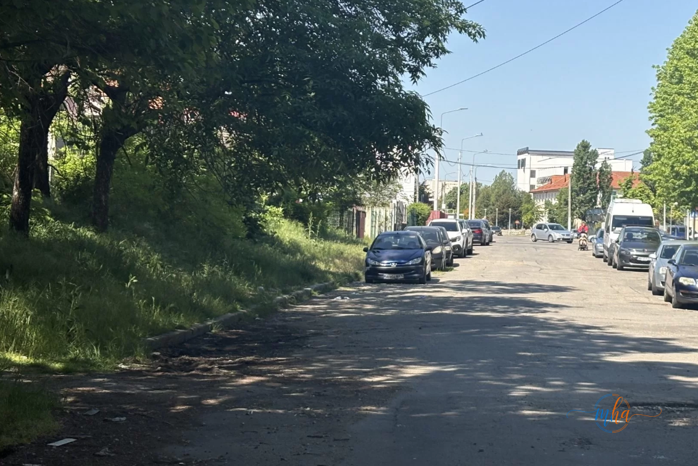

- Extinderea străzii Traian prin incinta fostului combinat de prelucrare a lemnului
- Legătură directă cu DN6 și cu centura ocolitoare a municipiului
- Finanțare din bugetul local al Primăriei Drobeta-Turnu Severin
- Investiție inclusă în bugetul anului 2026
- Demersurile pentru implementare încep în acest an
Investiția, inclusă în bugetul pe anul 2026, vizează continuarea drumului prin incinta fostului combinat de prelucrare a lemnului, o zonă care în prezent este impracticabilă. Noul traseu va permite o mai bună conexiune între cartiere și va contribui semnificativ la fluidizarea traficului.
Extinderea străzii Traian va crea o legătură directă cu DN6, dar și cu centura ocolitoare a municipiului, preluând o parte din aglomerația de pe principalele artere rutiere din oraș.

Un proiect așteptat de ani de zile
Proiectul este așteptat de ani de zile de către locuitori, care consideră că modernizarea și extinderea drumului vor aduce beneficii reale atât în ceea ce privește traficul, cât și dezvoltarea zonei.
Lucrările vor fi finanțate din bugetul local al Primăriei Drobeta-Turnu Severin, iar demersurile pentru implementarea proiectului vor începe în acest an.
Strada Traian, una dintre cele mai circulate artere ale municipiului, este cunoscută de generații de severineni drept „strada Mare". Extinderea acesteia reprezintă un pas important în modernizarea infrastructurii urbane a Drobetei și în reducerea presiunii din trafic de pe arterele principale ale orașului.